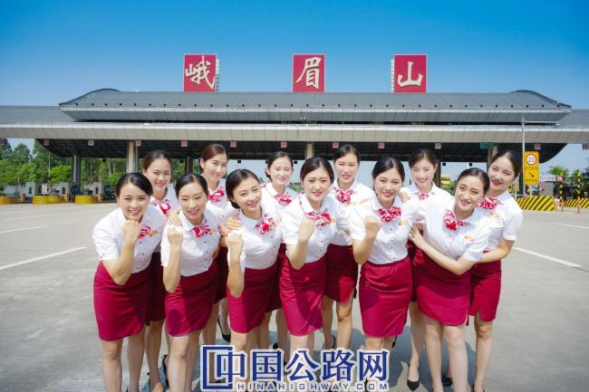
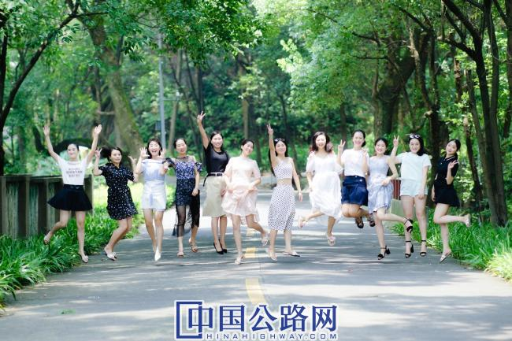

您好，欢迎来到中国高速公路网—21世纪公路网！
 来源：中国高速公路网—21世纪公路网
来源：中国高速公路网—21世纪公路网
 时间：2020-09-06
时间：2020-09-06

候选团队：“峨眉秀”团队
推荐单位：四川省交通投资集团有限责任公司
工作单位：四川雅眉乐高速公路有限责任公司
团队人数：39
女性成员比例：74.3%
曾获奖励：
四川省“巾帼文明岗”、乐山市“青年文明号”
乐山市“巾帼文明岗”、乐山市“三八红旗集体”
交投集团“优秀职工小家”
川高系统“五四红旗支部”、“合格职工小家”

先进事迹：
天下峨眉，乐雅至美
峨眉山自古就是一个人杰地灵的地方。“蜀国多仙山，峨眉邈难匹。地镇标神秀，峨眉上翠氛”是诗人给峨眉山的最佳注脚。
四川雅眉高速公路有限责任公司峨眉山收费站，位于峨眉山市桂花桥镇，距世界文化与自然双遗产，国家5A级旅游景区——峨眉山仅9公里，是连接乐山大佛和峨眉山的黄金旅游通道。
雅眉乐公司峨眉山收费站共设有17条收费车道，5进12出（含ETC双向收费车道），全站共有职工39人，平均年龄28岁，其中女职工29名，女职工占比达到了73%；全年日均车流量7000余辆，承担着整个公司21%的收费任务。2014年至今峨眉山通行费收入2.37亿元，堵漏增收61.74万元。收费站先后荣获了省交投集团公司优秀职工小家、乐山市青年文明号、乐山市巾帼文明岗、乐山市“三八”红旗集体、四川省巾帼文明岗等一系列荣誉称号。
为打造峨眉山收费站品牌形象，按照公司要求，2015年3月，峨眉山站按照形象气质佳、收费业务好的标准，从全线女收费员中挑选组建成立了“峨眉秀”标兵班。她们当中有空乘专业毕业的服务标兵，有各站推选的“服务明星”、“技能之星”，她们以公司“优雅生活，快乐工作”为理念，将文明服务、微笑服务和热情服务呈现给每一位司乘人员，她们将自己最美好的青春时光奉献在了三尺岗亭。
一、锤炼一流队伍
峨眉山站“峨眉秀”标兵班自成立以来，姑娘们始终坚持以“优雅服务•心悦途安”为服务宗旨，按照公司“双8”管理理念（“8S管理”“收费管理8大标准”），打造标准化示范窗口，通过“外塑形象、内提素质”，赢得了广大司乘人员的好评，逐渐塑造了峨眉山站良好的社会形象。
1.外塑形象
为进一步推进峨眉山收费站示范站标准化建设，展现峨眉山收费站作为乐雅高速乃至四川高速的“窗口”形象，“峨眉秀”标兵班的姑娘们结合公司“六个一工程”培训活动，经常利用业余时间在“优雅服务工作室”内反复练习微笑、礼仪手势等，并且按照公司要求淡妆上岗，对来往的司乘人员坚持使用礼貌用语，做到微笑服务。
峨眉山作为中国乃至世界的著名旅游景点，不少外国友人纷至沓来。作为向世界展现四川高速行业精神面貌的重要窗口，为了能更好交流，“峨眉秀”标兵班的姑娘们向站上提议，利用业余时间，召集全站收费员进行英文的礼貌用语学习。在巾帼班组团队的带动下，全站收费员进行了说英语，练口语的练习，面对外国友人，她们能进行简单的英文交流，这令很多外国朋友惊喜不已。她们不仅赢得广大司乘朋友的连连称赞，也塑造了四川高速的良好社会形象。
巾帼收费班的姑娘们还利用休息时间带动全站收费员进行“微笑操”练习，对迎送手势、微笑服务、坐姿、站姿、注目礼、点头礼等进行操练和纠正，确保峨眉山站的收费员都做到姿势标准，不断提升峨眉山站窗口形象。
2.内提素质
巾帼班组的姑娘们深知要提高自身素质必须狠抓队伍建设，她们把提高思想教育和业务素质作为加强队伍建设和做好收费工作的根本，利用空余时间练习点钞、收发卡、判车型等，积极参加公司举办的收费岗位技能竞赛，进一步加强了业务技能学习，努力成为高素质的复合型人才。
在收费站的“青年读书驿站”里，你会看到姑娘们的身影，她们在驿站里看书练字，交流心得。通过学习《高速公路营运管理法规文件汇编》，增强法律意识；阅读《致加西亚的信》，提高职业素养……通过不断在书籍中吸取营养，进一步提高自身综合素质，为提升峨眉山收费站窗口形象打下坚实的基础。
巾帼班组还带头组织学习上级制定的有关规章制度，在日常工作中加强业务学习，严格查验免费车辆，始终做到“依法收费，应征不漏，应免不收”。
班长邹宛霏作为收费班组的“领头羊”，凭借着自己丰富的工作经验，她积累了一套自己的打逃方法。有一次在查验一辆绿通车时，她判定该车并不符合免费要求，并亲自上车检查绿通货物。该车自称是一辆载有活鱼的鲜活车辆，司机特别“配合”的出示运输的单据，并主动拿出渔网以证明自己拉的确实是鱼。但是一看收费员要自己上来检查货物，司机顿时慌了神。邹宛霏礼貌的请司机打开货箱，结果发现里面根本没有鱼，只有满满的一车水和几条小鱼。司机特别的羞愧，默默的缴纳了通行费。事后，收费员崇拜的看着邹宛霏说到:“班长，你怎么知道他没有拉鱼呢？明明就是重车啊。”邹宛霏微笑着告诉她：“拉活鱼的货车，一般都需要通过氧气瓶给水补氧，这会导致水面上产生大量的泡沫，这个车上面一点泡沫星子都没有，肯定有蹊跷。”正是丰富的经验和高度的责任心，使得“应征不漏，应免不收”得到了切实的贯彻。
二、展示一流服务
两年多来，峨眉山站巾帼班的姑娘们在风雨中练就着坚韧与笃定，在拼搏中挥洒着热情和豪迈，她们以女性特有的严谨和细致，在收费窗口完美诠释着文明优质服务深刻内涵，不断提升文明服务意识，树立峨眉山站良好的窗口形象。
1.最美的风景
统一的仪表，统一的服务手势，统一的问候送别语，峨眉山站的姑娘们总是将自己满满的笑容洋溢在脸上。传递温暖，严抓细节，当听到司乘人员说出“谢谢”时，她们的内心便生出暖暖的幸福感，感受到付出的价值。
收费工作朴实而平凡，耐心和细心是收费工作中不可或缺的一部分。峨眉山收费站是通往峨边彝族自治县的重要通道，经常会遇到语言不通的少数民族同胞驾驶车辆从我站经过。每当遇到这种情况，姑娘们便会降低语速一遍遍的微笑耐心解释。玉经琢磨多成器，剑拔沉埋便倚天。在开展堵漏增收工作时，经常会遇到司机同志不理解，甚至恶言相向，但为确保公司通行费收入“应收不漏”，姑娘们虽然有满腹的委屈，仍然坚持优质服务，耐心地向司机同志做好解释。
2017年盛夏的一天，酷暑难耐。车道上，标兵班收费员胡雪梅依然坚守在岗位上。这时远处开来一辆货车，车辆在驶入车道时左摇右晃，引起了胡雪梅的警觉。司机开到窗口时，满头大汗、面色苍白，在缴费过程中注意力涣散、动作不协调，护理专业出生的她凭着自身的所学专业知识判定司机可能是因高温中暑了，经过询问，原来该车的空调系统坏了，汽车在暴晒下车内温度高达五十度，长时间的驾驶导致了驾驶员的中暑情况。胡雪梅随即指挥车辆停到站外安全停车处，并从收费站的便民服务箱中取出防暑药给司机服用，并叮嘱司机在荫凉处休息，待身体恢复后再上路。热情贴心的服务收获了货车司机的连声道谢和称赞。
每到周末和节假日，峨眉山收费站的车流量呈喷井式的增长，尤其是寒暑假高峰期，工作量成倍增加。峨眉秀美丽的姑娘们不仅要做好本职工作，还得身兼数职：景区介绍、路况咨询、安抚司乘、端茶递水都已成为家常便饭。加班对于峨眉秀班组来说早已不足为奇。娴熟的技能、优质的服务背后是他们付出的汗水与艰辛。
正因为如此，峨眉山下脚下才会有那绚丽的一抹红，峨眉山站也出现了一道亮丽的“风景线”。
2.爱心使者小分队
她们在日常工作中为司乘人员排忧解难可谓“家常便饭”。寒冬夜里，她们帮助迷路的孩子踏上返家之路；炎炎夏日，她们去敬老院看望孤寡老人；寒来暑往，她们为驾驶员指明到达目的地的最短路径；深夜雾霾，她们为滞留旅客送去一杯杯热气腾腾的开水......点点滴滴，道口的摄像头记录下了她们最灿烂的笑脸和最真诚的服务。
2017年公司一名收费员年仅8岁的儿子突发急性淋巴细胞白血病，病情危急。峨眉秀班组得知后，第一时间自发组织了捐款活动，号召全站共募集爱心捐款6535元。姑娘们还主动利用下班时间前往献血中心捐献血小板救治该名小朋友。虽然很多姑娘平时打针都会害怕，但在抽血的针头扎进胳膊的那一刻，她们眼里透露出更多的是勇敢和坚定。众多爱心的汇集，最终让这名小朋友脱离了危险期。
活泼的姑娘们业余时间也没闲着，她们积极参加“情满旅途•暖冬行动”志愿服务活动，热情并积极投身于服务中，成立2年多来，她们主动加入乐雅高速志愿服务队，奔赴敬老院、五保户，看望独居老人；去往当地村上为留守儿童送爱心，关爱孩子成长，将一份爱的正能量传递给社会。
3.疫情防控“逆行者”
“坚守既是职责”，疫情当前，峨眉山收费站全体职工发扬“逆行者”精神，万众一心，众志成城，严格按照坚定信心、同舟共济、科学防治、精准施策和“一断三不断”“三不一优”的要求和原则，积极做好交通运输联防联控和保通保畅工作。峨眉山站团员青年充分发扬“党有号召、团有行动”传统，成立了党员突击队、青年志愿者服务队，主动协助防控点做好交通疏导，承担“温度检测卡”的发放，做好复工复产相应工作，她们用自己的实际行动助力防控点共同做好疫情防控工作，展现了交通人践行社会主义核心价值观、弘扬新时期的交通精神，传递了社会正能量。
三、创造一流业绩
班组成员还注重合力，以打造品牌团队为动力，扎实开展“巾帼文明号”“青年文明号”等创建工作，引导员工立足岗位、建功立业，不断进取、甘于奉献、乐于助人，推动峨眉山品牌创建。
1.巾帼不让须眉
2017年，她们以省级“巾帼文明岗”为创建目标，多次主动学习讨论，领会创建精神，提出建议和意见，在此基础上共同制定了创建省级“巾帼文明岗”活动规划等一系列规章制度。日常工作中，她们会注意关怀职工工作和生活状态，做到有困难有人帮扶、有病痛带头关怀，努力当好峨眉山收费站的“娃娃头”，让职工感受家的温暖，让“走进峨眉站，感受温馨家”不只是一句口号。全班人员思想上始终保持先进性，成为了峨眉山站的示范班组，也使收费站成为了乐雅高速的示范站。
姑娘们树旗帜立标杆，以示范班引领带动其他班组，形成了“比学赶超”的好氛围，也凝聚了团队合力。她们将集体协作的力量发挥最大化，率先制定月度计划、分工安排等，虽然这些事说起来容易，但要做到持之以恒、长效实施却很难，“峨眉秀”班组的姑娘们牺牲了自己的大部分休息时间，根据班组内务的分工，专人专项负责细化月度目标，系统性梳理完成目标、带动其他班组规范管理。姑娘们付出很多却没有一句怨言。
去年以来，公司启动“树品牌，促营销”专项工作，峨眉山收费站作为重要的旅游通道，每逢节假日，车流量大幅度增加，“峨眉秀”班组始终保持优质文明服务，为过往的司乘人员留下了深刻的印象，展现了乐雅高速“优雅服务，心悦途安”的行业形象。她们在自己的岗位上默默奉献着自己的青春，用自己的实际行动展示了峨眉山收费站的风采。“巾帼不让须眉”，在她们身上得到了最好的映证。
2.挥洒热情
在工作的闲暇，她们把对生活的热情带到了站上，自立更生、丰衣足食，积极投身于“三园建设”中，对菜园进行翻地、播种、浇水，荒凉的一片空地如今已显出勃勃生机。一分耕耘一分收获，通过她们的努力，菜园已经取得大丰收，有西红柿、黄瓜、四季豆、辣椒、茄子等等，各种蔬菜端上员工们的餐桌，更丰富了大家的业余生活。
她们发挥“标兵班”带头作用，积极参加“美化办公环境，共创美好未来”义务劳动，不怕脏，不怕苦，抢先在前。利用业余时间编排文艺节目，发挥个人特长，彰显风采。2017年1月，姑娘们自编的舞蹈《舞动青春》参加公司“两学一做丰硕果，乐雅高速展新貌”文艺汇演，荣获二等奖。
“宝剑锋从磨砺出,梅花香自苦寒来”，峨眉山站“峨眉秀”班组的姑娘们以强烈的团队精神，积极向上、勇于创新，她们没有什么豪言壮语，只是默默地在自己平凡的工作岗位上，用实际行动展现着现代高速公路管理企业女职工身上特有的自强不息、爱岗敬业、乐观向上的精神风貌，在自己的工作岗位上用真诚的微笑谱写着巾帼不让须眉的新篇章。
【编辑：涂胜男 】
【审核：耿茁、孙婧】
 微信公众号
微信公众号
 微信订阅号
微信订阅号